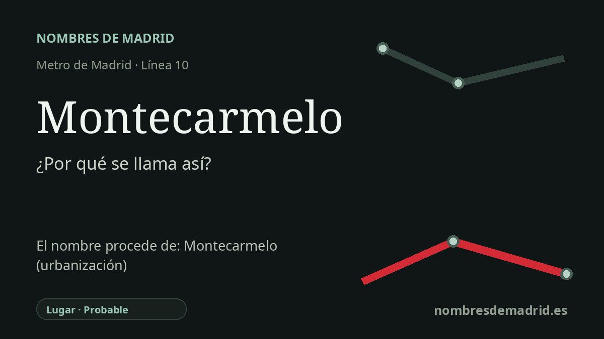

Publicado el · Investigación de Nombres de Madrid · Cómo verificamos cada origen · 7 fuentes consultadas
Respuesta rápida
La estación de Montecarmelo toma su nombre del moderno desarrollo urbano de Montecarmelo, en Fuencarral-El Pardo. El topónimo parece conservar el nombre anterior Monte Carmelo, asociado habitualmente a un arroyo local y, en último término, al Monte Carmelo de tradición religiosa.
La historia del nombre
La estación de Montecarmelo toma su nombre inmediato del área urbana de Montecarmelo, en el distrito de Fuencarral-El Pardo. La parada formó parte de MetroNorte, la prolongación septentrional de la línea 10 concebida para conectar Tres Olivos, los nuevos barrios del norte de Madrid, Alcobendas y San Sebastián de los Reyes. Para el público general, el origen directo del nombre es claro: la estación se llama como el lugar al que sirve.
Ese lugar no recibe el nombre de una persona, sino de un topónimo local anterior, escrito normalmente Monte Carmelo o Montecarmelo. La cartografía municipal muestra el entorno como Barrio del Monte Carmelo, y la documentación urbanística del Ayuntamiento identifica el ámbito como UZI.0.07 Montecarmelo (PP II.2). Varias fuentes secundarias explican el nombre por un arroyo cercano llamado Monte Carmelo o Montecarmelo, aunque no se ha localizado una fuente oficial que pruebe de forma concluyente que ese hidrónimo sea el origen legal del nombre del PAU.
Las palabras Monte Carmelo remiten a una geografía religiosa mucho más antigua. El Monte Carmelo, en Tierra Santa, es central en la tradición carmelita: la provincia carmelita en España sitúa allí el origen de la orden hace más de ochocientos años, y el nombre se difundió ampliamente mediante la devoción carmelita y la advocación de Nuestra Señora del Carmen o del Monte Carmelo. En Madrid, esa capa religiosa encaja además con el paisaje nominal del barrio, donde muchas calles llevan nombres de monasterios.
Un anclaje histórico cercano es el Santuario de Nuestra Señora de Valverde, al norte de Montecarmelo. El decreto de 2021 que lo declaró Bien de Interés Cultural lo sitúa junto al antiguo camino de Madrid a Colmenar Viejo y recoge la leyenda local de la aparición de la Virgen a unos pastores en 1242. Es un contexto valioso para entender el pasado rural y religioso de la zona, pero debe formularse con cuidado: la leyenda de Valverde explica el santuario, no directamente el nombre de la estación de Metro.
La etimología más segura es, por tanto, estratificada. La estación de Montecarmelo se llama por el desarrollo urbano y barrio de Montecarmelo; ese desarrollo conserva el topónimo anterior Monte Carmelo; y ese nombre anterior probablemente pertenece a la familia de topónimos religiosos vinculados al Carmelo y al Monte Carmelo. La cadena directa PAU-arroyo-Israel sigue siendo plausible, pero necesita una fuente municipal, cartográfica o archivística más fuerte para considerarse plenamente verificada.